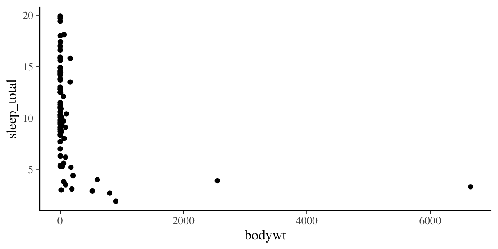
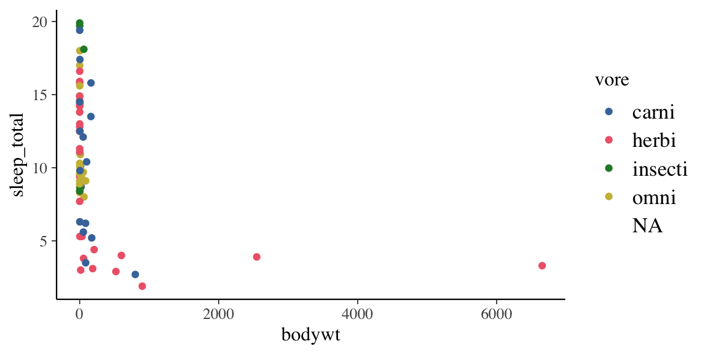
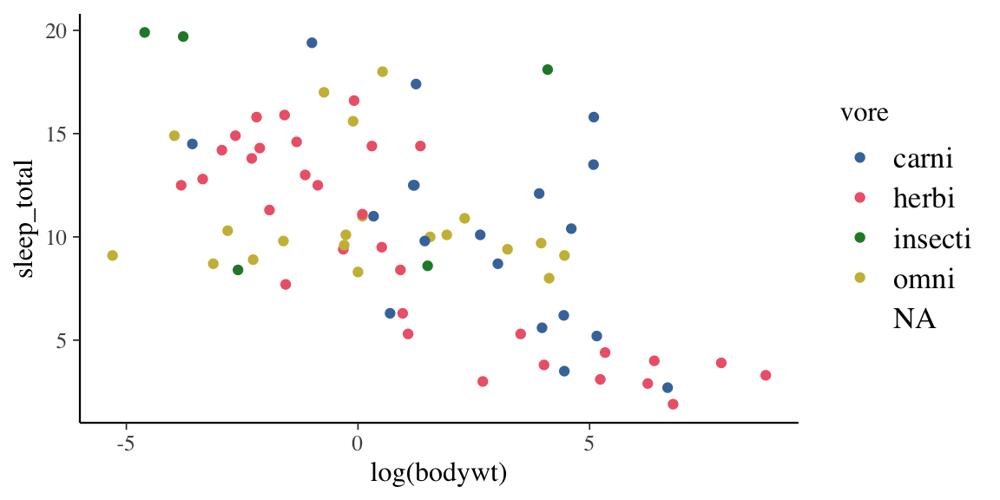
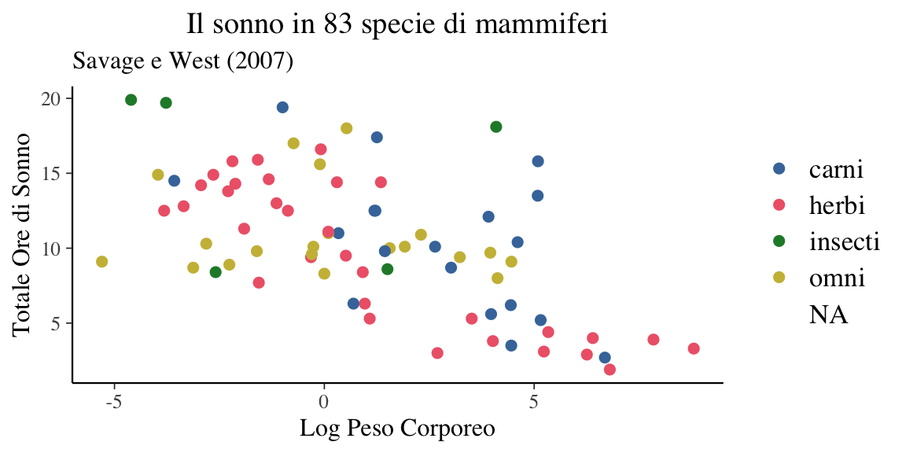
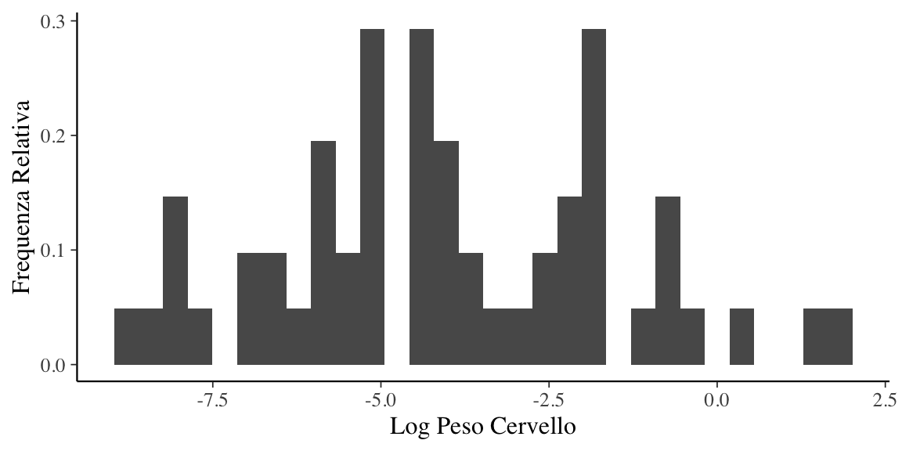

Appendice G Introduzione al linguaggio R
In questa sezione della dispensa saranno presentate le caratteristiche di base e la filosofia dell’ambiente R, passando poi a illustrare le strutture dati e le principali strutture di controllo. Verranno introdotte alcune funzioni utili per la gestione dei dati e verranno forniti i rudimenti per realizzare semplici funzioni. Verranno introdotti i tipi di file editabili in RStudio (script, markdown, …). Nello specifico, dopo aver accennato alcune caratteristiche del sistema tidyverse, verranno illustrate le principali funzionalità dell’IDE RStudio e dei pacchetti dplyr e ggplot2. Sul web sono presenti tantissime introduzioni all’uso di R, per esempio questa.
G.1 Prerequisiti
Al fine di utilizzare R è necessario eseguire le seguenti tre operazioni
nell’ordine dato:
- Installare
R; - Installare RStudio;
- Installare R-Packages (se necessario).
Di seguito viene descritto come installare R e RStudio.
G.1.1 Installare R e RStudio
R è disponibile gratuitamente ed è scaricabile dal sito
http://www.rproject.org/. Dalla pagina principale del sito
r-project.org andiamo sulla sezione Download e scegliamo un server a
piacimento per scaricare il software d’installazione. Una volta
scaricato l’installer, lo installiamo come un qualsiasi software,
cliccando due volte sul file d’istallazione. Esistono versioni di R per
tutti i più diffusi sistemi operativi (Windows, Mac OS X e Linux).
Il R Core Development Team lavora continuamente per migliorare le
prestazioni di R, per correggere errori e per consentire l’uso di con
nuove tecnologie. Di conseguenza, periodicamente vengono rilasciate
nuove versioni di R. Informazioni a questo proposito sono fornite sulla
pagina web https://www.r-project.org/. Per installare una nuova
versione di R si segue la stessa procedura che è stata seguita per la
prima installazione.
Insieme al software si possono scaricare dal sito principale sia manuali d’uso che numerose dispense per approfondire diversi aspetti di R. In particolare, nel sito http://cran.r-project.org/other-docs.html si possono trovare anche numerose dispense in italiano (sezione “Other languages”).
Dopo avere installato R è opportuno installare anche RStudio. RStudio si
può scaricare da https://www.rstudio.com/. Anche RStudio è disponibile
per tutti i più diffusi sistemi operativi.
G.1.2 Utilizzare RStudio per semplificare il lavoro
Possiamo pensare ad R come al motore di un automobile e a RStudio come
al cruscotto di un automobile. Più precisamente, R è un linguaggio di
programmazione che esegue calcoli mentre RStudio è un ambiente di
sviluppo integrato (IDE) che fornisce un’interfaccia grafica aggiungendo
una serie di strumenti che facilitano la fase di sviluppo e di
esecuzione del codice. Utilizzeremo dunque R mediante RStudio. In altre
parole,
non aprite

aprite invece

L’ambiente di lavoro di RStudio è costituito da quattro finestre: la finestra del codice (scrivere-eseguire script), la finestra della console (riga di comando - output), la finestra degli oggetti (elenco oggetti-cronologia dei comandi) e la finestra dei pacchetti-dei grafici-dell’aiuto in linea.

La console di RStudio.
G.1.3 Eseguire il codice
Mediante il menu a tendina di RStudio, scegliendo il percorso
File > New File > R Notebookoppure
File > New File > R Scriptl’utente può aprire nella finestra del codice (in alto a destra) un R Notebook o un R script dove inserire le istruzioni da eseguire.
In un R script, un blocco di codice viene eseguito selezionando un
insieme di righe di istruzioni e digitando la sequenza di tasti
Command + Invio sul Mac, oppure Control + Invio su Windows. In
un R Notebook, un blocco di codice viene eseguito schiacciando il
bottone con l’icona \(\color{red}\blacktriangleright\) (“Run current
chunk”) posizionata a destra rispetto al codice.
G.2 Sintassi di base
R è un linguaggio di programmazione orientato all’analisi dei dati, il
calcolo e la visualizzazione grafica. È disponibile su Internet una
vasta gamma di materiali utile per avvicinarsi all’ambiente R e aiutare
l’utente nell’apprendimento di questo software statistico. Cercheremo
qui di fornire alcune indicazioni e una breve descrizione delle risorse
di base di R.
Aggiungo qui sotto alcune considerazioni che ho preso, pari pari, da un testo che tratta di un altro linguaggio di programmazione, ma che si applicano perfettamente anche al caso nostro.
Come in ogni linguaggio, per parlare in R è necessario seguire un insieme di regole. Come in tutti i linguaggi di programmazione, queste regole sono del tutto inflessibili e inderogabili. In R, un enunciato o è sintatticamente corretto o è incomprensibile all’interprete, che lo segnalerà all’utente. Questo aspetto non è esattamente amichevole per chi non è abituato ai linguaggi di programmazione, e si trova così costretto ad una precisione di scrittura decisamente poco “analogica.” Tuttavia, ci sono due aspetti positivi nello scrivere codice, interrelati tra loro. Il primo è lo sforzo analitico necessario, che allena ad un’analisi precisa del problema che si vuole risolvere in modo da poterlo formalizzare linguisticamente. Il secondo concerne una forma di autoconsapevolezza specifica: salvo “bachi” nel linguaggio (rarissimi sebbene possibili), il mantra del programmatore è “Se qualcosa non ti funziona, è colpa tua” (testo adattato da Andrea Valle).
A chi preferisce un approccio più “giocoso” posso suggerire il seguente link.
G.2.1 Utilizzare la console R come calcolatrice
La console di RStudio contiene un cursore rappresentato dal simbolo “>”
(linea di comando) dove si possono inserire i comandi e le funzioni –
in realtà è sempre meglio utilizzare un R Notebook anziché la console,
ma per ora esaminiamo il funzionamento di quest’ultima.
La console di RStudio può essere utilizzata come semplice calcolatrice.
I comandi elementari consistono di espressioni o di assegnazioni. Le
operazioni aritmetiche vengono eseguite mediante simboli “standard:” +,
*, -, /, sqrt(), log(), exp(), …
I comandi sono separati da un carattere di nuova linea (si immette un
carattere di nuova linea digitando il tasto Invio). Se un comando non
è completo alla fine della linea, R darà un prompt differente che per
default è il carattere + sulla linea seguente e continuerà a leggere
l’input finché il comando non è sintatticamente completo. Ad esempio,
4 -
+
+1
#> [1] 3R è un ambiente interattivo, ossia i comandi producono una risposta immediata. Se scriviamo 2 + 2 e premiamo il tasto di invio, comparirà nella riga successiva il risultato:
2 + 2
#> [1] 4Il risultato è preceduto da [1], il che significa che il risultato dell’operazione che abbiamo appena eseguito è il primo valore di questa linea. Alcune funzioni ritornano più di un singolo numero e, in quel caso, l’informazione fornita da R è più utile. Per esempio, l’istruzione 100:130 ritorna \(31\) valori, ovvero i numeri da \(100\) a \(130\):
100:130
#> [1] 100 101 102 103 104 105 106 107 108 109 110 111 112 113
#> [15] 114 115 116 117 118 119 120 121 122 123 124 125 126 127
#> [29] 128 129 130In questo caso, sul mio computer, [24] indica che il valore \(123\) è il ventiquattresimo numero che è stato stampato sulla console – su un altro computer le cose possono essere diverse in quanto il risultato, credo, dipende dalla grandezza dello schermo.
G.2.2 Espressioni
In questo corso, cercheremo di evitare i numeri nei nomi R, così come le lettere maiuscole e .. Useremo quindi nomi come: my_data, anova_results, square_root, ecc.
Un’espressione in R è un enunciato finito e autonomo del linguaggio: una frase conclusa, si potrebbe dire. Si noti che le espressioni in R non sono delimitate dal ; come succede in alcuni linguaggi di programmazione. L’ordine delle espressioni è l’ordine di esecuzione delle stesse.
L’a capo non è rilevante per R. Questo permette di utilizzare l’a capo per migliorare la leggibilità del codice.
G.2.3 Oggetti
R è un linguaggio di programmazione a oggetti, quindi si basa sulla creazione di oggetti e sulla possibilità di salvarli nella memoria del programma. R distingue tra maiuscole e minuscole come la maggior parte dei linguaggi basati su UNIX, quindi A e a sono nomi diversi e fanno riferimento a oggetti diversi.
I comandi elementari di R consistono in espressioni o assegnazioni.
Se un’espressione viene fornita come comando, viene valutata, stampata sullo schermo e il valore viene perso, come succedeva alle operazioni aritmetiche che abbiamo presentato sopra discutendo l’uso della console R come calcolatrice.
Un’assegnazione crea un oggetto oppure valuta un’espressione e passa il valore a un oggetto, ma il risultato non viene stampato automaticamente sullo schermo. Per l’operazione di assegnazione si usa il simbolo <-. Ad esempio, per creare un oggetto che contiene il risultato dell’operazione 2 + 2 procediamo nel modo seguente:
res_sum <- 2 + 2
res_sum
#> [1] 4L’operazione di assegnazione (<-) copia il contenuto dell’operando destro (detto r-value) nell’operando sinistro detto (l-value). Il valore dell’espressione assegnazione è r-value. Nell’esempio precedente, res_sum (l-value) assume il valore di \(4\).
G.2.4 Variabili
L’oggetto res_sum è una variabile. Una spiegazione di ciò che questo significa è riportata qui sotto.
Una variabile è un segnaposto. Tutte le volte che si memorizza un dato lo si assegna ad una variabile. Infatti, se il dato è nella memoria, per potervi accedere, è necessario conoscere il suo indirizzo, la sua “etichetta” (come in un grande magazzino in cui si va a cercare un oggetto in base alla sua collocazione). Se il dato è memorizzato ma inaccessibile (come nel caso di un oggetto sperso in un magazzino), allora non si può usare ed è soltanto uno spreco di spazio. La teoria delle variabili è un ambito molto complesso nella scienza della computazione. Ad esempio, una aspetto importante può concernere la tipizzazione delle variabili. Nei linguaggi “tipizzati” (ad esempio C), l’utente dichiara che userà quella etichetta (la variabile) per contenere solo ed esclusivamente un certo tipo di oggetto (ad esempio, un numero intero), e la variabile non potrà essere utilizzata per oggetti diversi (ad esempio, una stringa). In questo caso, prima di usare una variabile se ne dichiara l’esistenza e se ne specifica il tipo. I linguaggi non tipizzati non richiedono all’utente di specificare il tipo, che viene inferito in vario modo (ad esempio, in funzione dell’assegnazione del valore alla variabile). Alcuni linguaggi (ad esempio Python) non richiedono neppure la dichiarazione della variabile, che viene semplicemente usata. È l’interprete che inferisce che quella stringa è una variabile. La tipizzazione impone vincoli d’uso sulle variabili e maggiore scrittura del codice, ma assicura una chiara organizzazione dei dati. In assenza di tipizzazione, si lavora in maniera più rapida e snella, ma potenzialmente si può andare incontro a situazioni complicate, come quando si cambia il tipo di una variabile “in corsa” senza accorgersene (Andrea Valle).
R è un linguaggio non tipicizzato, come Python. In R non è necessario dichiarare le variabili che si intendono utilizzare, né il loro tipo.
G.2.5 R console
La console di RStudio fornisce la possibilità di richiamare e rieseguire i comandi. I tasti freccia verticale, \(\uparrow\) e \(\downarrow\), sulla tastiera possono essere utilizzati per scorrere avanti e indietro i comandi già immessi. Appena trovato il comando che interessa, lo si può modificare, ad esempio, con i tasti freccia orizzontali, immettendo nuovi caratteri o cancellandone altri.
Se viene digitato un comando che R non riconosce, sulla console viene visualizzato un messaggio di errore; ad esempio,
3 % 9
Errore: unexpected input in "3 % 9"G.2.6 Parentesi
Le parentesi in R (come in generale in ogni linguaggio di programmazione) assegnano un significato diverso alle porzioni di codice che delimitano.
- Le parentesi tonde funzionano come nell’algebra. Per esempio
2 + 3 * 4
#> [1] 14non è equivalente a
(2 + 3) * 4
#> [1] 20Le due istruzioni precedenti producono risultati diversi perché, se
la sequenza delle operazioni algebriche non viene specificata dalle
parentesi, R assegna alle operazioni algebriche il seguente ordine
di priorità decrescente: esponenziazione, moltiplicazione /
divisione, addizione / sottrazione, confronti logici
(<, >, <=, >=, ==, !=). È sempre una buona idea rendere esplicito
l’ordine delle operazioni algebriche che si vuole eseguire mediante
l’uso delle parentesi tonde.
Le parentesi tonde vengono anche utilizzate per le funzioni, come
vedremo nei prossimi paragrafi. Tra le parentesi tonde avremo dunque
l’oggetto a cui vogliamo applicare la funzione e gli argomenti
passati alla funzione.
Le parentesi graffe sono destinate alla programmazione. Un blocco tra le parentesi graffe viene letto come un oggetto unico che può contenere una o più istruzioni.
Le parentesi quadre vengono utilizzate per selezionare degli elementi, per esempio all’interno di un vettore, o di una matrice, o di un data.frame. L’argomento entro le parentesi quadre può essere generato da espressioni logiche.
G.2.7 I nomi degli oggetti
Le entità create e manipolate da R si chiamano ‘oggetti.’ Tali oggetti
possono essere variabili (come nell’esempio che abbiamo visto sopra), array di numeri, caratteri, stringhe, funzioni, o più in generale strutture costruite a partire da tali
componenti. Durante una sessione di R gli oggetti sono creati e
memorizzati attraverso opportuni nomi.
I nomi possono contenere un qualunque carattere alfanumerico e come
carattere speciale il trattino basso (_) o il punto. R fornisce i
seguenti vincoli per i nomi degli oggetti: i nomi degli oggetti non
possono mai iniziare con un carattere numerico e non possono contenere i
seguenti simboli: $, @, !, ^, +, -, /, *. È buona
pratica usare nomi come ratio_of_sums. È fortemente sconsigliato
utilizzare nei nomi degli oggetti caratteri accentati o, ancora peggio,
apostrofi. Per questa ragione è sensato creare i nomi degli oggetti
utilizzando la lingua inglese. È anche bene che i nomi degli oggetti non
coincidano con nomi di funzioni. Ricordo nuovamente che R è case sensitive, cioè
A e a sono due simboli diversi e identificano due oggetti
differenti.
In questo corso cercheremo di evitare i numeri nei nomi degli oggetti R, così come le lettere maiuscole e il punto. Useremo quindi nomi come: my_data, regression_results, square_root, ecc.
G.2.8 Permanenza dei dati e rimozione di oggetti
Gli oggetti vengono salvati nello “spazio di lavoro” (workspace). Il
comando ls() può essere utilizzato per visualizzare i nomi degli
oggetti che sono in quel momento memorizzati in R.
Per eliminare oggetti dallo spazio di lavoro è disponibile la funzione
rm(); ad esempio
rm(x, y, z, ink, junk, temp, foo, bar)cancella tutti gli oggetti indicati entro parentesi. Per eliminare tutti gli oggetti presenti nello spazio di lavoro si può utilizzare la seguente istruzione:
rm(list = ls())G.2.9 Chiudere R
Quando si chiude RStudio il programma ci chiederà se si desidera salvare l’area di lavoro sul computer. Tale operazione è da evitare in quanto gli oggetti così salvati andranno ad interferire con gli oggetti creati in un lavoro futuro. Si consiglia dunque di rispondere negativamente a questa domanda.
In RStudio, selezionare
Preferencesdal menu a tendina e, inR GeneralWorkspace, deselezionare l’opzioneRestore .RData into workspace at start-upe scegliere l’opzioneNevernella finestra di dialogoSave workspace to.RData on exit.In R, selezionare
Preferencesdal menu a tendina e, inStartup, selezionare l’opzioneNoin corrispondenza dell’itemSave workspace on exit from R.
G.2.10 Creare ed eseguire uno script R con un editore
È molto più facile interagire con R manipolando uno script con un
editore piuttosto che inserendo direttamente le istruzioni nella
console. R fornisce il Text Editor dove è possibile inserire il codice
(File \(\to\) New Script). Per salvare il file basta utilizzare l’apposito
menù a tendina (estensione .R). Tale file potrà poi essere riaperto ed
utilizzato in un momento successivo.
L’editore comunica con R nel modo seguente: dopo avere selezionato la
porzione di codice che si vuole eseguire, si digita un’apposita sequenza
di tasti (Command + Enter su Mac OS X e ctrl + r in Windows).
ctrl + r significa premere il tasto ctrl e, tenendolo premuto, premere il tasto r della tastiera.
Così facendo, R eseguirà le istruzioni selezionate e l’output verrà
stampato sulla console. Il Text Editor fornito da R è piuttosto
primitivo: è fortemente consigliato utilizzare RStudio.
G.2.11 Commentare il codice
Un “commento” è una parte di codice che l’interprete non tiene in considerazione. Quando l’interprete arriva ad un segnalatore di commento salta fino al segnalatore di fine commento e di lì riprende il normale processo esecutivo.
I commenti sono parole in linguaggio naturale (nel nostro caso l’italiano), che permettono agli utilizzatori di capire il flusso logico del codice e a chi lo ha scritto di ricordare il perché di determinate istruzioni.
In R, le parole dopo il simbolo # sono considerate commenti e sono ignorate; ad esempio:
# Questo e' un commentoG.2.12 Cambiare la cartella di lavoro
Quando si inizia una sessione di lavoro, R sceglie una cartella quale
“working directory.” Sarà in tale cartella che andrà a cercare gli
script definiti dall’utilizzatore e i file dei dati. È possibile
determinare quale sia la corrente “working directory” digitando sulla
console di RStudio l’istruzione:
getwd()Per cambiare la cartella di lavoro (in maniera tale che corrisponda alla
cartella nella quale sono stati salvati i dati e gli script da eseguire)
si sceglie la voce Set Working Directory sul menù a tendina di RStudio
e si selezione la voce Choose Directory… Nella finestra che compare,
si cambia la cartella con quella che si vuole.
G.2.13 L’oggetto base di R: il vettore
R opera su strutture di dati; la più semplice di tali strutture è il
vettore numerico, che consiste in un insieme ordinato di numeri; ad
esempio:
x <- c(7.0, 10.2, -2.9, 21.4)Nell’istruzione precedente, c() è una funzione. In R gli argomenti
sono passati alle funzioni inserendoli all’interno delle parentesi
tonde. Si noti che gli argomenti (in questo caso, i numeri
\(7.0, 10.2, -2.9, 21.4\)) sono separati a virgole. La funzione c() può
prendere un numero arbitrario di argomenti e genera un vettore
concatenando i suoi argomenti. L’operatore <- assegna un nome al
vettore che è stato creato. Nel caso presente, digitando x possiamo
visualizzare il vettore che abbiamo creato:
x
#> [1] 7.0 10.2 -2.9 21.4Se invece eseguiamo l’istruzione
c(7.0, 10.2, -2.9, 21.4)
#> [1] 7.0 10.2 -2.9 21.4senza assegnazione, il valore dell’espressione sarà visualizzato nella console, ma il vettore non potrà essere utilizzato in nessun altro modo.
G.2.14 Operazioni vettorializzate
Molte operazioni in R sono vettorializzate, il che significa che esse
sono eseguite in parallelo in determinati oggetti. Ciò consente di
scrivere codice che sia efficiente, conciso e più facile da leggere
rispetto al codice che contiene istruzioni non vettorializzate.
G.2.15 Vettori aritmetici
L’esempio più semplice che illustra come si svolgono le operazioni vettorializzate riguarda le operazioni algebriche applicate ai vettori. I vettori, infatti, possono essere utilizzati in espressioni numeriche nelle quali le operazioni algebriche vengono eseguite “elemento per elemento.”
Per illustrare questo concetto, definiamo il vettore die che contiene
i possibili risultati del lancio di un dado:
die <- c(1, 2, 3, 4, 5, 6)
die
#> [1] 1 2 3 4 5 6Supponiamo di volere sommare \(10\) a ciascun elemento del vettore die.
Dato che le operazioni sui vettori sono eseguite elemento per elemento,
per ottenere questo risultato è sufficiente eseguire l’istruzione:
die + 10
#> [1] 11 12 13 14 15 16Si noti come la costante \(10\) sia stata sommata a ciascun elemento del vettore. In maniera corrispondente, l’istruzione
die - 1
#> [1] 0 1 2 3 4 5sottrarrà un’unità da ciascuno degli elementi del vettore die.
Se l’operazione aritmetica coinvolge due o più vettori, R allinea i vettori ed esegue una sequenza di operazioni elemento per elemento. Per esempio, l’istruzione
die * die
#> [1] 1 4 9 16 25 36fa sì che i due vettori vengano disposti l’uno di fianco all’altro per poi moltiplicare gli elementi corrispondenti: il primo elemento del primo vettore per il primo elemento del secondo vettore e così via. Il vettore risultante avrà la stessa dimensione dei due vettori che sono stati moltiplicati, come indicato qui sotto:
\[
\begin{array}{ccccc}
1 & \times & 1 & \to & 1 \\
2 & \times & 2 & \to & 4 \\
3 & \times & 3 & \to & 9 \\
4 & \times & 4 & \to & 16 \\
5 & \times & 5 & \to & 25 \\
6 & \times & 6 & \to & 36 \\
\hline
\verb+die+ & * & \verb+die+ & = &
\end{array}
\]
Oltre agli operatori aritmetici elementari +, -, *, /, e ^ per
l’elevamento a potenza, sono disponibili le più comuni funzioni
matematiche: log(), exp(), sin(), cos(), tan(), sqrt(),
max(), min() e così via. Altre funzioni di uso comune sono:
range() che restituisce un vettore c(min(x), max(x)); sort() che
restituisce un vettore ordinato; length(x) che restituisce il numero
di elementi di x; sum(x) che dà la somma degli elementi di x,
mentre prod(x) dà il loro prodotto. Due funzioni statistiche di uso
comune sono mean(x), la media aritmetica, e var(x), la varianza.
G.2.16 Generazione di sequenze regolari
R possiede un ampio numero di funzioni per generare sequenze di numeri.
Ad esempio, c(1:10) è il vettore c(1, 2, 3, 4, 5, 6, 7, 8, 9, 10).
L’espressione c(30:1) può essere utilizzata per generare una sequenza
all’indietro.
La funzione seq() genera un vettore che contiene una sequenza regolare
di numeri, generata in base a determinate regole. Può avere 5 argomenti:
i primi due rappresentano l’inizio (from) e la fine (to) della
sequenza, il terzo specifica l’ampiezza del passo (by), il quarto la
lunghezza della sequenza (length.out) e infine il quinto
(along.with), che se utilizzato deve essere l’unico parametro
presente, è il nome di un vettore, ad esempio x, creando in tal modo
la sequenza 1, 2, …, length(x). Esempi di utilizzo della funzione
seq() sono i seguenti:
seq(from = 1, to = 10)
#> [1] 1 2 3 4 5 6 7 8 9 10
seq(-5, 5, by = 2.5)
#> [1] -5.0 -2.5 0.0 2.5 5.0
seq(from = 1, to = 7, length.out = 4)
#> [1] 1 3 5 7
seq(along.with = die)
#> [1] 1 2 3 4 5 6Altra funzione utilizzata per generare sequenze è rep() che può essere
utilizzata per replicare un oggetto in vari modi. Ad esempio:
die3 <- rep(die, times = 3)
die3
#> [1] 1 2 3 4 5 6 1 2 3 4 5 6 1 2 3 4 5 6metterà tre copie di die nell’oggetto die3.
G.2.17 Generazione di numeri casuali
La funzione sample() è una delle tante funzioni che possono essere
usate per generare numeri casuali. Per esempio, la seguente istruzione
simula dieci lanci di un dado a sei facce:
roll <- sample(1:6, 10, replace = TRUE)
roll
#> [1] 1 5 1 1 2 4 2 2 1 4Il primo argomento di sample() è il vettore da cui la funzione
estrarrà degli elementi a caso; il secondo argomento specifica che
dovranno essere effettuate 10 estrazioni casuali; il terzo argomento
specifica che le estrazioni sono con rimessa (cioè, lo stesso elemento
può essere estratto più di una volta).
Scegliere un elemento a caso dal vettore \(\{1, 2, 3, 4, 5, 6\}\) è equivalente a lanciare un dado e osservare la faccia che si presenta. L’istruzione precedente corrisponde dunque alla simulazione di dieci lanci di un dado a sei facce.
G.2.18 Vettori logici
Quando si manipolano i vettori, talvolta si vogliono trovare gli
elementi che soddisfano determinate condizioni logiche. Per esempio, in
dieci lanci di un dado, quante volte è uscito \(5\)? Per rispondere a
questa domanda si possono usare gli operatori logici <, > e == per
le operazioni di “minore di,” “maggiore di” e “uguale a.” Se scriviamo
roll == 5
#> [1] FALSE TRUE FALSE FALSE FALSE FALSE FALSE FALSE FALSE
#> [10] FALSEcreiamo un vettore costituito da elementi TRUE/FALSE i quali
identificano gli elementi del vettore che soddisfano la condizione
logica specificata.
Possiamo trattare tale vettore come se fosse costituito da elementi di valore \(0\) e \(1\). Sommando gli elementi di tale vettore, infatti, possiamo contare il numero di “5”:
sum(roll == 5)
#> [1] 1G.2.19 Dati mancanti
Quando si è in presenza di un dato mancante, R assegna il valore
speciale NA, che sta per Not Available. In generale, un’operazione
su un NA dà come risultato un NA. Nell’uso delle funzioni che
operano sui dati sarà dunque necessario specificare che, qualunque
operazione venga effettuata, gli NA devono essere esclusi.
G.2.20 Vettori di caratteri e fattori
I vettori di caratteri si creano formando una sequenza di caratteri
delimitati da doppie virgolette e possono essere concatenati in un
vettore attraverso la funzione c(). Successivamente, si può applicare
la funzione factor(), che definisce automaticamente le modalità della
variabile categoriale. Ad esempio,
soc_status <- factor(
c("low", "high", "medium", "high", "low", "medium", "high")
)
levels(soc_status)
#> [1] "high" "low" "medium"Talvolta l’ordine dei livelli del fattore non importa, mentre altre volte l’ordine è importante, per esempio, quando una variable categoriale viene rappresentata in un grafico. Per specificare l’ordine dei livelli del fattore si usa la seguente sintassi:
soc_status <-
factor(soc_status, levels = c("low", "medium", "high"))
levels(soc_status)
#> [1] "low" "medium" "high"G.2.21 Funzioni
R offre la possibilità di utilizzare un’enorme libreria di funzioni che
permettono di svolgere operazioni complicate, quali ad esempio, il
campionamento casuale. Esaminiamo ora con più attenzione le proprietà
delle funzioni di R utilizzando ancora l’esempio del lancio di un dado.
Abbiamo visto in precedenza come il lancio di un dado possa essere
simulato da R con la funzione sample(). La funzione sample() prende
tre argomenti: il nome di un vettore, un numero chiamato size e un
argomento chiamato replace. La funzione sample() ritorna un numero
di elementi del vettore pari a size. Ad esempio
sample(die, 2, replace = TRUE)
#> [1] 1 5Assegnando TRUE all’argomento replace specifichiamo che vogliamo un
campionamento con rimessa.
Se volgiamo eseguire una serie di lanci indipendenti di un dado,
eseguiamo ripetutamente la funzione sample() ponendo size uguale a
1:
sample(die, 1, replace = TRUE)
#> [1] 6
sample(die, 1, replace = TRUE)
#> [1] 4
sample(die, 1, replace = TRUE)
#> [1] 2Come si fa a sapere quanti e quali argomenti sono richiesti da una
funzione? Tale informazione viene fornita dalla funzione args(). Nel
nostro caso
args(sample)
#> function (x, size, replace = FALSE, prob = NULL)
#> NULLci informa che il primo argomento è un vettore chiamato x, il secondo
argomento è chiamato size ed ha il significato descritto sopra, il
terzo argomento, replace, specifica se il campionamento è eseguito con
o senza reimmissione, e il quarto argomento, prob, assegna delle
probabilità agli elementi del vettore. Il significato degli argomenti
viene spiegato nel file di help della funzione. Si noti che agli ultimi
due argomenti sono stati assegnati dei valori, detti di default. Ciò
significa che, se l’utilizzatore non li cambia, verranno usati da . La
specificazione replace = FALSE significa che il campionamento viene
eseguito senza reimmissione. Se desideriamo un campionamento con
reimmissione, basta specificare replace = TRUE (nel caso di una
singola estrazione è ovviamente irrilevante). Ad esempio, l’istruzione
seguente simula i risultati di 10 lanci indipendenti di un dado:
sample(die, 10, replace = TRUE)
#> [1] 2 3 1 1 3 4 5 5 5 4Infine, prob = NULL specifica che non viene alterata la probabilità di
estrazione degli elementi del vettore. In generale, gli argomenti di una
funzione possono essere oggetti come vettori, matrici, altre funzioni,
parametri o operatori logici.
R ha un sistema di help interno in formato HTML che si richiama con
help.start(). Per avere informazioni su qualche funzione specifica,
per esempio la funzione sample(), il comando da utilizzare è
help(sample) oppure ?sample.
G.2.22 Scrivere proprie funzioni
Abbiamo visto in precedenza come sia possibile simulare i risultati
prodotti da dieci lanci di un dado o, in maniera equivalente, dal
singolo lancio di dieci dadi. Possiamo replicare questo processo
digitando ripetutamente le stesse istruzioni nella console. Otterremo
ogni volta risultati diversi perché, ad ogni ripetizione, il generatore
di numeri pseudo-casuali di R dipende dal valore ottenuto dal clock
interno della macchina. La funzione set.seed() ci permette di
replicare esattamente i risultati della generazione di numeri casuali.
Per ottenere questo risultato, basta assegnare al seed un numero
arbitrario, es. set.seed(12345). Tuttavia, questa procedura è
praticamente difficile da perseguire se il numero di ripetizioni è alto.
In tal caso è vantaggioso scrivere una funzione contenente il codice che
specifica il numero di ripetizioni. In questo modo, per trovare il
risultato cercato basterà chiamare la funzione una sola volta.
Le funzioni utilizzate da R sono costituite da tre elementi: il nome, il blocco del
codice e una serie di argomenti. Per creare una funzione è necessario
immagazzinare in R questi tre elementi e function() consente di
ottenere tale risultato usando la sintassi seguente:
nome_funzione <- function(arg1, arg2, ...) {
espressione1
espressione2
return(risultato)
}Una chiamata di funzione è poi eseguita nel seguente modo:
nome_funzione(arg1, arg2, ...)Per potere essere utilizzata, una funzione deve essere presente nella
memoria di lavoro di R. Le funzioni salvate in un file possono essere
richiamate utilizzando la funzione source(), ad esempio,
source("file_funzioni.R").
Consideriamo ora la funzione two_rolls() che ritorna la somma dei
punti prodotti dal lancio di due dadi non truccati:
two_rolls <- function() {
die <- 1:6
res <- sample(die, size = 2, replace = TRUE)
sum_res <- sum(res)
return(sum_res)
}La funzione two_rolls() inizia con il creare il vettore die che
contiene sei elementi: i numeri da \(1\) a \(6\). Viene poi utilizzata la
funzione sample() con gli gli argomenti, die, size = 2 e
replace = TRUE. Tale funzione restituisce il risultato del lancio di
due dadi. Il risultato fornito da sample(die, size = 2, replace = TRUE) viene assegnato all’oggetto res. L’oggetto res corrisponde dunque ad un vettore di due elementi.
L’istruzione sum(res) somma gli elementi del vettore res e
attribuisce il risultato di questa operazione a sum_res. Infine, la
funzione return() ritorna il contenuto dell’oggetto sum_res.
Invocando la funzione two_rolls() si ottiene dunque la somma del
lancio di due dadi. In generale, la funzione two_rolls() produrrà un
risultato diverso ogni volta che viene usata:
two_rolls()
#> [1] 6
two_rolls()
#> [1] 5
two_rolls()
#> [1] 3La formattazione del codice mediante l’uso di spazi e rientri non è necessaria ma è altamente raccomandata per minimizzare la probabilità di compiere errori.
G.2.23 Pacchetti
Le funzioni di R sono organizzate in pacchetti, i più importanti dei
quali sono già disponibili quando si accede al programma.
G.2.24 Istallazione e upgrade dei pacchetti
Alcuni pacchetti non sono presenti nella release di base di R. Per
installare un pacchetto non presente è sufficiente scrivere nella
console:
install.packages("nome_pacchetto")Ad esempio,
install.packages("ggplot2")La prima volta che si usa questa funzione durante una sessione di lavoro si dovrà anche selezionare da una lista il sito mirror da cui scaricare il pacchetto.
Gli autori dei pacchetti periodicamente rilasciano nuove versioni dei
loro pacchetti che contengono miglioramenti di varia natura. Per
eseguire l’upgrade dei pacchetti ggplot2 e dplyr, ad esempio, si usa
la seguente istruzione:
update.packages(c("ggplot2", "dplyr"))Per eseguire l’upgrade di tutti i pacchetti l’istruzione è
update.packages()G.2.25 Caricare un pacchetto in R
L’istallazione dei pacchetti non rende immediatamente disponibili le funzioni in essi contenute. L’istallazione di un pacchetto semplicemente copia il codice sul disco rigido della macchina in uso. Per potere usare le funzioni contenute in un pacchetto installato è necessario caricare il pacchetto in . Ciò si ottiene con il comando:
library("ggplot2")se si vuole caricare il pacchetto ggplot2. A questo punto diventa
possibile usare le funzioni contenute in ggplot2. Queste operazioni si
possono anche eseguire usando dal menu a tendina di RStudio.
Per sapere quali sono i pacchetti già presenti nella release di R con
cui si sta lavorando, basta scrivere:
library()G.3 Strutture di dati
Solitamente gli psicologi raccolgono grandi quantità di dati. Tali dati
vengono codificati in R all’interno di oggetti aventi proprietà
diverse. Intuitivamente, in R un oggetto è qualsiasi cosa a cui è
possibile assegnare un valore. I dati possono essere di tipo numerico o
alfanumerico. Di conseguenza, Rdistingue tra oggetti aventi modi
diversi. Inoltre, i dati possono essere organizzati in righe e colonne
in base a diversi tipi di strutture che R chiama classi.
G.3.1 Classi e modi degli oggetti
Gli oggetti R si distinguono a seconda della loro classe (class) e
del loro modo (mode). La classe definisce il tipo di oggetto. In R,
vengono utilizzate cinque strutture di dati che corrispondono a cinque
classi differenti: vector, matrix, array, list e data.frame.
Un’altra classe di oggetti R è function (ad essa appartengono le
funzioni).
La classe di appartenenza di un oggetto si stabilisce usando le funzioni
class(), oppure is.list(), is.function(), is.logical(), e così
via. Queste funzioni restituisco TRUE e FALSE in base
all’appartenenza o meno dell’argomento a quella determinata classe.
Gli oggetti R possono anche essere classificati in base al loro ‘modo.’
I modi ‘atomici’ degli oggetti sono: numeric, complex, character e
logical. Per esempio,
x <- c(4, 9)
mode(x)
#> [1] "numeric"
cards <- c("9 of clubs", "10 of hearts", "jack of hearts")
mode(cards)
#> [1] "character"Nel seguito verranno esaminate le cinque strutture di dati utilizzate da
R.
G.3.2 Vettori
I vettori sono la classe di oggetto più importante in R. Un vettore può
essere creato usando la funzione c():
y <- c(2, 1, 6, -3, 9)
y
#> [1] 2 1 6 -3 9Le dimensioni di un vettore presente nella memoria di lavoro possono essere trovare con la funzione length(); ad esempio,
length(y)
#> [1] 5ci dice che y è un vettore costituito da cinque elementi. La somma, il
minimo e il massimo degli elementi contenuti in un vettore si trovano
con le seguenti istruzioni:
sum(y)
#> [1] 15
min(y)
#> [1] -3
max(y)
#> [1] 9Mentre ci sono sei ‘tipi’ di vettori ‘atomici’ in R, noi ci
focalizzeremo sui tipi seguenti: ‘numeric’ (‘integer’: e.g., 5;
‘double’: e.g., 5.5), ‘character’ (e.g., ‘pippo’) e ‘logical’
(e.g., TRUE, FALSE). Usiamo la funzione typeof() per determinare
il ‘tipo’ di un vettore atomico. Tutti gli elementi di un vettore
atomico devono essere dello stesso tipo. La funzione str() rende
visibile in maniera compatta la struttura interna di un oggetto.
G.3.3 Matrici
Una matrice è una collezione di vettori. Il comando per generare una
matrice è matrix():
X <- matrix(1:20, nrow = 4, byrow = FALSE)
X
#> [,1] [,2] [,3] [,4] [,5]
#> [1,] 1 5 9 13 17
#> [2,] 2 6 10 14 18
#> [3,] 3 7 11 15 19
#> [4,] 4 8 12 16 20Il primo argomento è il vettore i cui elementi andranno a disporsi
all’interno della matrice. È poi necessario specificare le dimensioni
della matrice e il modo in cui R dovrà riempire la matrice. Date le
dimensioni del vettore, la specificazione del numero di righe (secondo
argomento) è sufficiente per determinare le dimensioni della matrice.
L’argomento byrow = FALSE è il default. In tal caso, R riempie la
matrice per colonne. Se vogliamo che R riempia la matrice per righe,
usiamo byrow = TRUE:
Y <- matrix(1:20, nrow = 4, byrow = TRUE)
Y
#> [,1] [,2] [,3] [,4] [,5]
#> [1,] 1 2 3 4 5
#> [2,] 6 7 8 9 10
#> [3,] 11 12 13 14 15
#> [4,] 16 17 18 19 20Le dimensioni di una matrice presente nella memoria di lavoro possono
essere trovare con la funzione dim(); ad esempio,
dim(Y)
#> [1] 4 5ci dice che Y è una matrice con quattro righe e cinque colonne.
G.3.4 Array
Un array è una collezione di matrici (si veda la
Figura 1.1). Per costruire un array con la
funzione array() è necessario specificare un vettore come primo
argomento e un vettore di dimensioni, chiamato dim, quale secondo
argomento:
ar <- array(
c(11:14, 21:24, 31:34),
dim = c(2, 2, 3)
)Un sottoinsieme di questi dati può essere selezionato, per esempio, nel modo seguente:
ar[, , 3]
#> [,1] [,2]
#> [1,] 31 33
#> [2,] 32 34G.3.5 Operazioni aritmetiche su vettori, matrici e array
G.3.5.1 Operazioni aritmetiche su vettori
I vettori e le matrici (o gli array) possono essere utilizzati in espressioni aritmetiche. Il risultato è un vettore o una matrice (o un array) formato dalle operazioni fatte elemento per elemento sui vettori o sulle matrici. Ad esempio,
y + 3
#> [1] 5 4 9 0 12restituisce un vettore di dimensioni uguali alle dimensioni di y, i
cui elementi sono dati dalla somma tra ciascuno degli elementi originari
di y e la costante “3.”
Ovviamente, ad un vettore possono essere applicate tutte le altre operazioni algebriche, sempre elemento per elemento. Ad esempio,
3 * y
#> [1] 6 3 18 -9 27restituisce un vettore i cui elementi sono uguali agli elementi di y
moltiplicati per 3.
Se sono costituiti dallo stesso numero di elementi, due vettori possono essere sommati, sottratti, moltiplicati e divisi, laddove queste operazioni algebriche vengono eseguite elemento per elemento. Per esempio,
x <- c(1, 1, 2, 1, 3)
y <- c(2, 1, 6, 3, 9)
x + y
#> [1] 3 2 8 4 12
x - y
#> [1] -1 0 -4 -2 -6
x * y
#> [1] 2 1 12 3 27
x / y
#> [1] 0.5000000 1.0000000 0.3333333 0.3333333 0.3333333G.3.5.2 Operazioni aritmetiche su matrici
Le operazioni algebriche elemento per elemento si possono estendere al
caso delle matrici. Per esempio, se X, Y sono entrambe matrici di
dimensioni \(4 \times 5\), allora la seguente operazione
M <- 2 * (X + Y) - 3crea una matrice D anch’essa di dimensioni \(4 \times 5\) i cui elementi
sono ottenuti dalle operazioni fatte elemento per elemento sulle matrici
e sugli scalari:
M
#> [,1] [,2] [,3] [,4] [,5]
#> [1,] 1 11 21 31 41
#> [2,] 13 23 33 43 53
#> [3,] 25 35 45 55 65
#> [4,] 37 47 57 67 77G.3.5.3 Operazioni aritmetiche su array
Le stesse considerazioni si estendono al caso degli array.
G.3.6 Liste
Le liste assomigliano ai vettori perché raggruppano i dati in un insieme
unidimensionale. Tuttavia, le liste non raggruppano elementi individuali
ma bensì oggetti di R, quali vettori e altre liste. Per esempio,
list1 <- list("R", list(TRUE, FALSE), 20:24)
list1
#> [[1]]
#> [1] "R"
#>
#> [[2]]
#> [[2]][[1]]
#> [1] TRUE
#>
#> [[2]][[2]]
#> [1] FALSE
#>
#>
#> [[3]]
#> [1] 20 21 22 23 24Le doppie parentesi quadre identificano l’elemento della lista a cui vogliamo fare riferimento. Per esempio,
list1[[3]]
#> [1] 20 21 22 23 24
list1[[3]][2]
#> [1] 21G.3.7 Data frame
I data.frame sono strutture tipo matrice, in cui le colonne possono
essere vettori di tipi differenti. La funzione usata per generare un
data frame è data.frame(), che permette di unire più vettori di uguale
lunghezza come colonne del data frame, ognuno dei quali si riferisce ad
una diversa variabile. Ad esempio,
df <- data.frame(
face = c("ace", "two", "six"),
suit = c("clubs", "clubs", "clubs"),
value = c(1, 2, 3)
)
df
#> face suit value
#> 1 ace clubs 1
#> 2 two clubs 2
#> 3 six clubs 3L’estrazione di dati da un data.frame può essere effettuata in maniera
simile a quanto avviene per i vettori. Ad esempio, per estrarre la
variabile value dal data.frame df si può indicare l’indice della
terza colonna:
df[, 3]
#> [1] 1 2 3Dal momento che le colonne sono delle variabili, è possibile estrarle
anche indicando nome della variabile, scrivendo
nome_data_frame$nome_variabile:
df$value
#> [1] 1 2 3Per fare un esempio, creiamo un data.frame che contenga tutte le informazioni di un mazzo di carte da poker (Grolemund 2014). In tale data.frame, ciascuna riga
corrisponde ad una carta – in un mazzo da poker ci sono 52 carte,
perciò il data.frame avrà 52 righe. Il vettore face indica con una
stringa di caratteri il valore di ciascuna carta, il vettore suit
indica il seme e il vettore value indica con un numero intero il
valore di ciascuna carta. Quindi, il data.frame avrà 3 colonne.
deck <- data.frame(
face = c(
"king", "queen", "jack", "ten", "nine", "eight",
"seven", "six", "five", "four", "three", "two", "ace",
"king", "queen", "jack", "ten", "nine", "eight", "seven",
"six", "five", "four", "three", "two", "ace", "king",
"queen", "jack", "ten", "nine", "eight", "seven", "six",
"five", "four", "three", "two", "ace", "king", "queen",
"jack", "ten", "nine", "eight", "seven", "six", "five",
"four", "three", "two", "ace"
),
suit = c(
"spades", "spades", "spades", "spades",
"spades", "spades", "spades", "spades", "spades",
"spades", "spades", "spades", "spades", "clubs", "clubs",
"clubs", "clubs", "clubs", "clubs", "clubs", "clubs",
"clubs", "clubs", "clubs", "clubs", "clubs", "diamonds",
"diamonds", "diamonds", "diamonds", "diamonds",
"diamonds", "diamonds", "diamonds", "diamonds",
"diamonds", "diamonds", "diamonds", "diamonds", "hearts",
"hearts", "hearts", "hearts", "hearts", "hearts",
"hearts", "hearts", "hearts", "hearts", "hearts",
"hearts", "hearts"
),
value = c(13, 12, 11, 10, 9, 8, 7, 6, 5, 4, 3, 2, 1, 13, 12, 11, 10, 9, 8, 7, 6, 5, 4, 3, 2, 1, 13, 12, 11, 10, 9, 8, 7, 6, 5, 4, 3, 2, 1, 13, 12, 11, 10, 9, 8, 7, 6, 5, 4, 3, 2, 1)
)Avendo salvato tutte queste informazioni nell’oggetto deck, possiamo
stamparle sullo schermo semplicemente digitando il nome dell’oggetto che
le contiene:
deck
#> face suit value
#> 1 king spades 13
#> 2 queen spades 12
#> 3 jack spades 11
#> 4 ten spades 10
#> 5 nine spades 9
#> 6 eight spades 8
#> 7 seven spades 7
#> 8 six spades 6
#> 9 five spades 5
#> 10 four spades 4
#> 11 three spades 3
#> 12 two spades 2
#> 13 ace spades 1
#> 14 king clubs 13
#> 15 queen clubs 12
#> 16 jack clubs 11
#> 17 ten clubs 10
#> 18 nine clubs 9
#> 19 eight clubs 8
#> 20 seven clubs 7
#> 21 six clubs 6
#> 22 five clubs 5
#> 23 four clubs 4
#> 24 three clubs 3
#> 25 two clubs 2
#> 26 ace clubs 1
#> 27 king diamonds 13
#> 28 queen diamonds 12
#> 29 jack diamonds 11
#> 30 ten diamonds 10
#> 31 nine diamonds 9
#> 32 eight diamonds 8
#> 33 seven diamonds 7
#> 34 six diamonds 6
#> 35 five diamonds 5
#> 36 four diamonds 4
#> 37 three diamonds 3
#> 38 two diamonds 2
#> 39 ace diamonds 1
#> 40 king hearts 13
#> 41 queen hearts 12
#> 42 jack hearts 11
#> 43 ten hearts 10
#> 44 nine hearts 9
#> 45 eight hearts 8
#> 46 seven hearts 7
#> 47 six hearts 6
#> 48 five hearts 5
#> 49 four hearts 4
#> 50 three hearts 3
#> 51 two hearts 2
#> 52 ace hearts 1Si noti che, a schermo, R stampa un numero progressivo che corrisponde
al numero della riga.
G.3.7.1 Selezione di elementi
Una volta creato un data.frame, ad esempio quello che contiene un mazzo
virtuale di carte (si veda
l’esempio \[exmp:deck_of_cards\]), è necessario sapere come manipolarlo.
La funzione head() mostra le prime sei righe del data.frame:
head(deck)
#> face suit value
#> 1 king spades 13
#> 2 queen spades 12
#> 3 jack spades 11
#> 4 ten spades 10
#> 5 nine spades 9
#> 6 eight spades 8Poniamoci ora il problema di mescolare il mazzo di carte e di estrarre
alcune carte dal mazzo. Queste operazioni possono essere eseguite usando
il sistema notazionale di R.
Il sistema di notazione di R consente di estrarre singoli elementi
dagli oggetti definiti da R. Per estrarre un valore da un data.frame,
per esempio, dobbiamo scrivere il nome del data.frame seguito da una
coppia di parentesi quadre:
deck[, ]All’interno delle parentesi quadre ci sono due indici separati da una
virgola. R usa il primo indice per selezionare un sottoinsieme di righe
del data.frame e il secondo indice per selezionare un sottoinsieme di
colonne. L’indice è il numero d’ordine che etichetta progressivamente ognuno dei valori del vettore. Per esempio,
deck[9, 2]
#> [1] "spades"restituisce l’elemento che si trova nella nella nona riga della seconda
colonna di deck.
In R ci sono sei modi diversi per specificare gli indici di un oggetto:
interi positivi, interi negativi, zero, spazi vuoti, valori logici e
nomi. Esaminiamoli qui di seguito.
G.3.7.2 Interi positivi
Gli indici \(i, j\) possono essere degli interi positivi che identificano l’elemento nella \(i\)-esima riga e nella \(j\)-esima colonna del data.frame. Per l’esempio relativo al mazzo di carte, l’istruzione
deck[1, 1]
#> [1] "king"ritorna il valore nella prima riga e nella prima colonna. Per estrarre
più di un valore, usiamo un vettore di interi positivi. Per esempio, la
prima riga di deck si trova con
deck[1, c(1:3)]
#> face suit value
#> 1 king spades 13Tale sistema notazionale non si applica solo ai data.frame ma può essere
usato anche per gli altri oggetti di R.
L’indice usato da R inizia da 1. In altri linguaggi di programmazione,
per esempio C, inizia da 0.
G.3.7.3 Interi negativi
Gli interi negativi fanno l’esatto contrario degli interi positivi: R ritornerà tutti gli elementi tranne quelli specificati dagli interi negativi. Per esempio, la prima riga del data.frame può essere specificata nel modo seguente
deck[-(2:52), 1:3]
#> face suit value
#> 1 king spades 13ovvero, escludendo tutte le righe seguenti.
G.3.7.4 Zero
Quando lo zero viene usato come indice, R non ritorna nulla dalla
dimensione a cui lo zero si riferisce. L’istruzione
deck[0, 0]
#> data frame con 0 colonne e 0 righeritorna un data.frame vuoto. Non molto utile.
G.3.7.5 Spazio ’ ’
Uno spazio viene usato quale indice per comunicare a R di estrarre
tutti i valori in quella dimensione. Questo è utile per estrarre intere
colonne o intere righe da un data.frame. Per esempio, l’istruzione
deck[3, ]
#> face suit value
#> 3 jack spades 11ritorna la terza riga del data.frame deck.
G.3.7.6 Valori booleani
Se viene fornito un vettore di stringhe TRUE, FALSE, R selezionerà
gli elementi riga o colonna corrispondenti ai valori booleani TRUE
usati quali indici. Per esempio, l’istruzione
deck[3, c(TRUE, TRUE, FALSE)]
#> face suit
#> 3 jack spadesritorna i valori delle prime due colonne della terza riga di deck.
G.3.7.7 Nomi
È possibile selezionare gli elementi del data.frame usando i loro nomi. Per esempio,
deck[1, c("face", "suit", "value")]
#> face suit value
#> 1 king spades 13
deck[, "value"]
#> [1] 13 12 11 10 9 8 7 6 5 4 3 2 1 13 12 11 10 9
#> [19] 8 7 6 5 4 3 2 1 13 12 11 10 9 8 7 6 5 4
#> [37] 3 2 1 13 12 11 10 9 8 7 6 5 4 3 2 1G.3.8 Giochi di carte
Avendo presentato le nozioni base del sistema di notazione di R,
utilizziamo tali conoscenze per manipolare il data.frame. L’istruzione
deck[1:52, ]ritorna tutte le righe e tutte e le colonne del data.frame deck. Le
righe sono identificate dal primo indice, che va da 1 a 52. Permutare in
modo casuale l’indice delle righe equivale a mescolare il mazzo di
carte. Per fare questo, utilizziamo la funzione sample() ponendo replace=FALSE e size
uguale alla dimensione del vettore che contiene gli indici da 1 a 52:
random <- sample(1:52, size = 52, replace = FALSE)
random
#> [1] 49 37 1 25 10 36 18 24 7 47 52 51 20 26 3 42 27 31
#> [19] 5 40 2 28 8 38 39 50 48 45 11 15 22 30 4 33 46 13
#> [37] 12 34 19 32 21 17 29 16 44 43 23 41 6 14 35 9Utilizzando il vettore random di indici permutati otteniamo il
risultato cercato:
deck_shuffled <- deck[random, ]
head(deck_shuffled)
#> face suit value
#> 49 four hearts 4
#> 37 three diamonds 3
#> 1 king spades 13
#> 25 two clubs 2
#> 10 four spades 4
#> 36 four diamonds 4Possiamo ora scrivere una funzione che include le precedenti istruzioni:
shuffle <- function(cards) {
random <- sample(1:52, size = 52, replace = FALSE)
return(cards[random, ])
}Invocando la funzione shuffle() possiamo generare un data.frame che
rappresenta un mazzo di carte mescolato:
deck_shuffled <- shuffle(deck)Se immaginiamo di distribuire le carte di questo mazzo a due giocatori di poker, per il primo giocatore avremo:
deck_shuffled[c(1, 3, 5, 7, 9), ]
#> face suit value
#> 52 ace hearts 1
#> 21 six clubs 6
#> 38 two diamonds 2
#> 40 king hearts 13
#> 33 seven diamonds 7e per il secondo:
deck_shuffled[c(2, 4, 6, 8, 10), ]
#> face suit value
#> 3 jack spades 11
#> 2 queen spades 12
#> 10 four spades 4
#> 5 nine spades 9
#> 39 ace diamonds 1G.3.9 Variabili locali
Si noti che, nell’esempio precedente, abbiamo passato l’argomento deck
alla funzione shuffle(), perché questo è il nome del data.frame che
volevamo manipolare. Nella definizione della funzione shuffle(), però,
l’argomento della funzione era chiamato cards. Il nome degli argomenti
è diverso nei due casi. Allora perché l’istruzione shuffle(deck) non
dà un messaggio d’errore?
La risposta a questa domanda è che nelle funzioni le variabili nascono
quando la funzione entra in esecuzione e muoiono al termine
dell’esecuzione della funzione. Per questa ragione, sono dette ‘locali.’
La variabile cards, in questo esempio, esiste soltanto all’interno
della funzione. Dunque non deve (necessariamente) avere lo stesso nome
di un altro oggetto che esiste al di fuori della funzione, nello spazio
di lavoro di R (anzi, è meglio se il nome degli oggetti usati
all’interno delle funzioni è diverso da quello degli oggetti che
esistono fuori dalle funzioni). R sa che l’oggetto deck passato a
shuffle() corrisponde a cards all’interno della funzione perché
assegna il nome cards a qualunque oggetto venga passato alla funzione
shuffle() come primo (e, in questo caso, unico) argomento.
G.4 Strutture di controllo
In R il flusso della computazione segue l’ordine di lettura delle espressioni. I controlli di flusso sono quei costrutti sintattici che possono modificare quest’ordine di computazione. Ad esempio, un ciclo for ripete le istruzioni annidate al suo interno per un certo numero di volte, e quindi procede sequenzialmente da lì in avanti, mentre un condizionale if valuta una condizione rispetto alla quale il flusso di informazioni si biforca (se è vero / se è falso). Ci limitiamo qui ad introdurre il ciclo for.
G.4.1 Il ciclo for
Il ciclo for è una struttura di controllo iterativa che determina l’esecuzione di una porzione di codice ripetuta per un certo numero noto di volte. Il linguaggio R usa la seguente sintassi per il ciclo for:
for (indice in valori_indice) {
operazioni
}
il che significa “esegui le operazioni operazioni per i diversi valori di indice compresi nel vettore valori_indice.” Per esempio, il seguente ciclo for non fa altro che stampare il valore della variabile contatore in ciascuna esecuzione del ciclo:
for (i in 1:3) {
print(i)
}
#> [1] 1
#> [1] 2
#> [1] 3Un esempio (leggermente) più complicato è il seguente:
x_list <- seq(1, 9, by = 2)
x_list
#> [1] 1 3 5 7 9
sum_x <- 0
for (x in x_list) {
sum_x <- sum_x + x
cat("L'indice corrente e'", x, "\n")
cat("La frequenza cumulata e'", sum_x, "\n")
}
#> L'indice corrente e' 1
#> La frequenza cumulata e' 1
#> L'indice corrente e' 3
#> La frequenza cumulata e' 4
#> L'indice corrente e' 5
#> La frequenza cumulata e' 9
#> L'indice corrente e' 7
#> La frequenza cumulata e' 16
#> L'indice corrente e' 9
#> La frequenza cumulata e' 25Per esempio, quanti numeri pari sono contenuti in un vettore? La
risposta a questa domanda viene fornita dalla funzione
countEvenNumbers() che possiamo definire come indicato qui sotto:
countEvenNumbers <- function(x) {
count <- 0
for (i in 1:length(x)) {
if (x[i] %% 2 == 0) {
count <- count + 1
}
}
count
}Nella funzione countEvenNumbers() abbiamo inizializzato la variabile
count a zero. Prima dell’esecuzione del ciclo for, dunque, count
vale zero. Il ciclo for viene eseguito tante volte quanti sono gli
elementi che costituiscono il vettore x. L’indice i dunque assume
valori compresi tra 1 e il valore che corrisponde al numero di elementi
di x. L’operazione modulo, indicato con %% dà come risultato il
resto della divisione euclidea del primo numero per il secondo. Per
esempio, 9 %% 2 dà come risultato \(1\) perché questo è il resto della
divisione \(9/2\). L’operazione modulo dà come risultato \(0\) per tutti i
numeri pari. In ciascuna esecuzione del ciclo for l’operazione modulo
viene eseguita, successivamente, su uno degli elementi di x. Se
l’operazione modulo dà \(0\) come risultato, ovvero se il valore
considerato è un numero pari, allora la variabile count viene
incrementata di un’unità. L’istruzione return() ritorna il
numero di valori pari contenuti nel vettore di input alla funzione.
Si noti che è necessario usare return(): la funzione ritornerà qualunque cosa sia stampato nell’ultima riga della funzione stessa.
Facciamo un esempio:
x <- c(1, 2, 1, 4, 6, 3, 9, 12)
countEvenNumbers(x)
#> [1] 4G.5 Input/Output
I dati raccolti dallo psicologo sono contenuti in file aventi formati
diversi: solo testo, CSV, Excel, eccetera. R prevede diverse funzioni
di importazione dei dati. Esamineremo qui la funzione read.table() per
l’importazione di dati in formato solo testo, ma funzioni analoghe
possono essere usate per molti altri formati possibili.
G.5.1 La funzione read.table()
Ci sono tanti modi per importare un file dal nostro computer. R permette di utilizzare delle funzioni che sono già nella libreria di base, oppure possiamo utilizzare delle funzioni specifiche, a seconda del tipo di file da importare, che sono contenute in pacchetti aggiuntivi. Per leggere i dati da file in R è conveniente
preliminarmente generare un file di dati in formato ASCII, disponendoli
come si farebbe in una matrice di dati, e mettere questo file nella
cartella di lavoro corrente. Fatto questo, si può utilizzare la funzione
read.table() presente nella libreria di base per leggere l’intero
dataset. Se la prima riga del file contiene l’intestazione delle
variabili, allora read.table("my_file.txt", header = TRUE)
interpreterà la prima riga del file come una riga dove sono contenuti i
nomi delle variabili, assegnando ciascun nome alle variabili del data
frame:
mydata <- read.table("my_file.txt", header = TRUE)In alternativa, si può impiegare la funzione read.csv(), che è adatta
a leggere dati salvati in .csv. Utilizzando altre funzioni, si possono
leggere in R i dati contenuti in file aventi formati diversi da quelli
considerati qui, quali Excel, SPSS, ecc.
G.5.2 File di dati forniti da R
In R esistono comunque oltre 50 insiemi di dati contenuti nel package
base e altri sono disponibili in altri packages. Per vedere l’elenco
degli insiemi di dati disponibili nel package base basta usare
l’istruzione data(); per caricare un particolare insieme di dati, ad
esempio cars, basta utilizzare l’istruzione
data(cars)Nella maggior parte dei casi questo corrisponde a caricare un oggetto,
solitamente un data.frame dello stesso nome: per l’esempio considerato
si avrebbe un data frame di nome cars.
G.6 Esportazione di un file
Per esportare un data.frame in formato .csv possiamo scrivere il
seguente codice
write.csv(df_esempio, file = "esempio.csv", row.names = FALSE)dove df_esempio è il data.frame da salvare e esempio.csv è il file
che verrà salvato all’interno della nostra cartellla di lavoro.
G.6.1 Pacchetto rio
Un’alternativa più semplice è fornita dalle funzioni fornite dal pacchetto rio. Per importare i dati da un file in qualsiasi formato si usa
my_data_frame <- rio::import("my_file.csv")Per esportare i dati in un file avente qualsiasi formato si usa invece
rio::export(my_data_frame, "my_file.csv")G.6.2 Dove sono i miei file?
Quello che abbiamo detto finora, a proposito dell’importazione ed esportazione dei file, si riferisce a file che si trovano nella cartella di lavoro (working directory). Ma non sempre ci troviamo in questa situazione, il che è anche una buona cosa, perché se dobbiamo gestire un progetto anche leggermente complesso è sempre una buona idea salvare i file che usiamo in cartelle diverse. Per esempio, possiamo usare una cartella chiamata psicometria dove salviamo tutto il materiale di questo insegnamento. Nella cartella psicometria ci potrà essere una cartella chiamata scripts dove salveremo gli script con il codice R utilizzato per i vari esercizi, e una cartella chiamata data dove possiamo salvare i dati. Questa organizzazione minimale ci pone, però, difronte ad un problema: i dati che vogliamo caricare in R non si trovano più nella cartella dove sono contenuti gli script. Quando importiamo un file di dati dobbiamo dunque specificare il percorso che identifica la posizione sul nostro computer del file che ci interessa.
Questo problema può essere risolto in due modi: speficicando l’inridizzo del file in modo assoluto o relativo. Specificare l’indirizzo di un file in modo assoluto ha una serie di limiti. Il più grande è che non sarà possibile utilizzare quell’istruzione su una macchina diversa. Dunque, è molto più conveniente specificare l’indirizzo dei file in modo relativo. Ma relativo rispetto a cosa? Rispetto alla working directory che definirà l’origine del nostro percorso.
Ma è facile immaginare che progetti diversi possano avere diverse working directory. Infatti le cose stanno proprio in questo modo: per ciascun progetto dobbiamo specificare una diversa working directory. Per esempio, potremmo avere un progetto relativo all’insegnamento di Psicometria e un progetto relativo alla prova finale.
Per organizzaere il lavoro in questo modo, si procede come segue. Supponiamo di creare una cartella chiamata psicometria che contiene, al suo interno, le cartelle scripts e data:
psicometria/
├── data
├── scriptsQueste cartelle conterranno i file che ho specificato sopra.
Chiudiamo RStudio, se è aperto e lo riapriamo di nuovo. Dal menu selezioniamo File -> New Project... Questo aprirà un altro menu che ci chiederà, tra le altre cose se vogliamo creare un nuovo progetto (New project). Selezioniamo quell’opzione e navighiamo fino alla cartella psicometria e selezioniamo open. Questo creerà un file chiamato psicometria.Rproj nella cartella psicometria.
Chiudiamo RStudio. Se vogliamo accedere al progetto “psicometria” dobbiamo cliccare sul file psicometria.Rproj. Questo aprirà RStudio e farà in modo che la working directory coincida con la cartalla psicometria. Ogni volta che vogliamo lavorare sui dati del progetto “psicometria” dobbiamo chiudere RStudio (se è già aperto) e riaprirlo cliccando sul file psicometria.Rproj.
A questo punto possiamo definire l’indirizzo dei file in modo relativo – relativo alla cartella psicometria. Per fare questo usiamo le funzionalità del pacchetto here. Supponiamo di volere caricare un file di dati che si chiama dati_depressione.txt e si trova nella cartella data contenuta nella cartella psicometria. Per importare questi dati (dopo avere caricato i pacchetti rio e here) useremo l’istruzione seguente:
rio::import(here("data", "dati_depressione.txt"))In altre parole, così facendo specifichiamo il percorso relativo del file dati_depressione.txt. L’istruzione precedente significa che, partendo dalla cartella che coincide con la working directory dobbiamo spostarci nella cartella data e lì dentro troviamo il file chiamato dati_depressione.txt.
G.7 Manipolazione dei dati
G.7.1 Motivazione
Si chiamano “dati grezzi” quelli che provengono dal mondo circostanze, i
dati raccolti per mezzo degli strumenti usati negli esperimenti, per
mezzo di interviste, di questionari, ecc. Questi dati (chiamati
dataset) raramente vengono forniti con una struttura logica precisa.
Per potere elaborarli mediante dei software dobbiamo prima trasformarli
in maniera tale che abbiano una struttura logica organizzata. La
struttura che solitamente si utilizza è quella tabellare (matrice dei
dati), ovvero si dispongono i dati in una tabella nella quale a ciascuna
riga corrisponde ad un’osservazione e ciascuna colonna corrisponde ad
una variabile rilevata. In R una tale struttura è chiamata data frame.
Il pacchetto dplyr, che è al momento uno dei pacchetti più famosi e
utilizzati per la gestione dei dati, offre una serie di funzionalità che
consentono di ottenere il risultato descritto in precedenza e consente
inoltre di eseguire le operazioni più comuni di manipolazione dei dati
in maniera più semplice rispetto a quanto succeda quando usiamo le
funzioni base di R.
G.7.2 Trattamento dei dati con dplyr
Il pacchetto dplyr include cinque funzioni base: filter(),
select(), mutate(), arrange() e summarise(). A queste cinque
funzioni di base si aggiungono il pipe %>% che serve a concatenare più
operazioni e group_by che serve per il subsetting. In particolare,
considerando una matrice osservazioni per variabili, select() e
mutate() si occupano di organizzare le variabili, filter() e
arrange() i casi, e summarise() i gruppi.
Per introdurre le funzionalità di base di dplyr, considereremo i dati contenuti nel data frame msleep fornito dal pacchetto ggplot2, che elenca le ore di sonno medie per 83 specie di mammiferi (Savage et al. 2007). Carichiamo il pacchetto tidyverse (che contiene ggplot2) e leggiamo nella memoria di lavoro l’oggetto msleep:
library("tidyverse")
data(msleep)
dim(msleep)
#> [1] 83 11G.7.2.1 Operatore pipe
Prima di presentare le funzionalità di tidyverse, introduciamo l’operatore pipe %>% del pacchetto magrittr – ma ora presente anche in base R nella versione |>. L’operatore pipe, %>% o |>, serve a concatenare varie funzioni insieme, in modo da inserire un’operazione dietro l’altra. Una spiegazione intuitiva dell’operatore pipe è stata fornita in un tweet di @andrewheiss. Consideriamo la seguente istruzione in pseudo-codice R:
leave_house(get_dressed(get_out_of_bed(wake_up(me, time = "8:00"), side = "correct"), pants = TRUE, shirt = TRUE), car = TRUE, bike = FALSE)Il listato precedente descrive una serie di (pseudo) funzioni concatenate, le quali costituiscono gli argomenti di altre funzioni. Scritto così, il codice è molto difficile da capire. Possiamo però ottenere lo stesso risultato utilizzando l’operatore pipe che facilita la leggibilità del codice:
me %>%
wake_up(time = "8:00") %>%
get_out_of_bed(side = "correct") %>%
get_dressed(pants = TRUE, shirt = TRUE) %>%
leave_house(car = TRUE, bike = FALSE)In questa seconda versione del (pseudo) codice R si capisce molto meglio ciò che vogliamo fare. Il data.frame me viene passato alla funzione wake_up(). La funzione wake_up() ha come argomento l’ora del giorno: time = "8:00". Una volta “svegliati” (wake up) dobbiamo scendere dal letto. Quindi l’output di wake_up() viene passato alla funzione get_out_of_bed() la quale ha come argomento side = "correct" perché vogliamo scendere dal letto dalla parte giusta. E così via.
G.7.2.2 Selezionare le colonne del data.frame con select()
Ritorniamo ora all’esempio precedente e supponiamo di volere selezionare le variabili name, vore e sleep_total dal data.frame msleep. Per fare ciò usiamo funzione select() che consente di selezionare un sottoinsieme di variabili in un dataset. Usando pipe scriviamo:
dt <- msleep %>%
dplyr::select(name, vore, sleep_total)
dt
#> # A tibble: 83 × 3
#> name vore sleep_total
#> <chr> <chr> <dbl>
#> 1 Cheetah carni 12.1
#> 2 Owl monkey omni 17
#> 3 Mountain beaver herbi 14.4
#> 4 Greater short-tailed shrew omni 14.9
#> 5 Cow herbi 4
#> 6 Three-toed sloth herbi 14.4
#> 7 Northern fur seal carni 8.7
#> 8 Vesper mouse <NA> 7
#> 9 Dog carni 10.1
#> 10 Roe deer herbi 3
#> # … with 73 more rowsladdove la sequenza di istruzioni precedenti significa che il data.frame dt è stato passato alla funzione select() contenuta nel pacchetto dplyr.
G.7.2.3 Filtrare le righe del data.frame con filter()
La funzione filter() consente di selezionare un sottoinsieme di
osservazioni in un dataset. Per esempio, possiamo selezionare tutte le
osservazioni nella variabile vore contrassegnate come carni in
questo modo (ovvero, tutti i carnivori):
dt %>%
dplyr::filter(vore == "carni")
#> # A tibble: 19 × 3
#> name vore sleep_total
#> <chr> <chr> <dbl>
#> 1 Cheetah carni 12.1
#> 2 Northern fur seal carni 8.7
#> 3 Dog carni 10.1
#> 4 Long-nosed armadillo carni 17.4
#> 5 Domestic cat carni 12.5
#> 6 Pilot whale carni 2.7
#> 7 Gray seal carni 6.2
#> 8 Thick-tailed opposum carni 19.4
#> 9 Slow loris carni 11
#> 10 Northern grasshopper mouse carni 14.5
#> 11 Tiger carni 15.8
#> 12 Jaguar carni 10.4
#> 13 Lion carni 13.5
#> 14 Caspian seal carni 3.5
#> 15 Common porpoise carni 5.6
#> 16 Bottle-nosed dolphin carni 5.2
#> 17 Genet carni 6.3
#> 18 Arctic fox carni 12.5
#> 19 Red fox carni 9.8G.7.2.4 Aggiungere una colonna al data.frame con mutate()
Talvolta vogliamo creare una nuova variabile in uno stesso dataset ad
esempio sommando o dividendo due variabili, oppure calcolandone la
media. A questo scopo si usa la funzione mutate(). Per esempio, se
vogliamo esprimere i valori di sleep_total in minuti, moltiplichiamo
per 60:
dt %>%
mutate(sleep_minutes = sleep_total * 60) %>%
dplyr::select(sleep_total, sleep_minutes)
#> # A tibble: 83 × 2
#> sleep_total sleep_minutes
#> <dbl> <dbl>
#> 1 12.1 726
#> 2 17 1020
#> 3 14.4 864
#> 4 14.9 894
#> 5 4 240
#> 6 14.4 864
#> 7 8.7 522
#> 8 7 420
#> 9 10.1 606
#> 10 3 180
#> # … with 73 more rowsG.7.2.5 Ordinare i dati con arrange()
La funzione arrange() serve a ordinare i dati in base ai valori di una
o più variabili. Per esempio, possiamo ordinare la variabile
sleep_total dal valore più alto al più basso in questo modo:
dt %>%
arrange(desc(sleep_total))
#> # A tibble: 83 × 3
#> name vore sleep_total
#> <chr> <chr> <dbl>
#> 1 Little brown bat insecti 19.9
#> 2 Big brown bat insecti 19.7
#> 3 Thick-tailed opposum carni 19.4
#> 4 Giant armadillo insecti 18.1
#> 5 North American Opossum omni 18
#> 6 Long-nosed armadillo carni 17.4
#> 7 Owl monkey omni 17
#> 8 Arctic ground squirrel herbi 16.6
#> 9 Golden-mantled ground squirrel herbi 15.9
#> 10 Tiger carni 15.8
#> # … with 73 more rowsG.7.2.6 Raggruppare i dati con group_by()
La funzione group_by() serve a raggruppare insieme i valori in base a
una o più variabili. La vedremo in uso in seguito insieme a
summarise().
G.7.2.7 Sommario dei dati con summarise()
La funzione summarise() collassa il dataset in una singola riga dove
viene riportato il risultato della statistica richiesta. Per esempio, la
media del tempo totale del sonno è
dt %>%
summarise(
m_sleep = mean(sleep_total, na.rm = TRUE)
) %>%
unlist()
#> m_sleep
#> 10.43373G.7.2.8 Operazioni raggruppate
In precedenza abbiamo visto come i mammiferi considerati dormano, in
media, 10.4 ore al giorno. Troviamo ora il sonno medio in funzione di
vore:
dt %>%
group_by(vore) %>%
summarise(
m_sleep = mean(sleep_total, na.rm = TRUE),
n = n()
)
#> # A tibble: 5 × 3
#> vore m_sleep n
#> <chr> <dbl> <int>
#> 1 carni 10.4 19
#> 2 herbi 9.51 32
#> 3 insecti 14.9 5
#> 4 omni 10.9 20
#> 5 <NA> 10.2 7Si noti che, nel caso di 7 osservazioni, il valore di vore non era
specificato. Per tali osservazioni, dunque, la classe di appartenenza è
NA.
G.7.3 Dati categoriali in R
Consideriamo una variabile che descrive il genere e include le categorie male, female e non-conforming. In R, ci sono due modi per memorizzare queste informazioni. Uno è usare la classe character strings e l’altro è usare la classe factor. Non ci addentrimo qui nelle sottigliezze di questa distinzione, motivata in gran parte per le necessità della programmazione con le funzioni di tidyverse. Per gli scopi di questo insegnamento sarà sufficiente codificare le variabili qualitative usando la classe factor. Una volta codificati i dati qualitativi utilizzando la classe factor, si pongono spesso due problemi:
- modificare le etichette dei livelli (modalità) di un fattore,
- riordinare i livelli di un fattore.
G.7.3.1 Modificare le etichette dei livelli di un fattore
Esaminiamo l’esempio seguente.
f_1 <- c("old_3", "old_4", "old_1", "old_1", "old_2")
f_1 <- factor(f_1)
y <- 1:5
df <- data.frame(f_1, y)
df
#> f_1 y
#> 1 old_3 1
#> 2 old_4 2
#> 3 old_1 3
#> 4 old_1 4
#> 5 old_2 5Supponiamo di volere che i livelli del fattore f_1 abbiano le etichette new_1, new_2, ecc. Per ottenere questo risultato usiamo la funzione recode() di dplyr:
df <- df %>%
mutate(
f_1 =
dplyr::recode(f_1,
"old_1" = "new_poco",
"old_2" = "new_medio",
"old_3" = "new_tanto",
"old_4" = "new_massimo",
)
)
df
#> f_1 y
#> 1 new_tanto 1
#> 2 new_massimo 2
#> 3 new_poco 3
#> 4 new_poco 4
#> 5 new_medio 5G.7.3.2 Riordinare i livelli di un fattore
Spesso i livelli dei fattori hanno un ordinamento naturale. Tuttavia, l’impostazione predefinita in base R è ordinare i livelli in ordine alfabetico. Quindi, gli utenti devono avere un modo per imporre l’ordine desiderato sulla codifica delle loro variabili qualitative. Ciò può essere ottenuto nel modo seguente.
df$f_1 <- factor(df$f_1,
levels = c(
"new_poco", "new_medio", "new_tanto", "new_massimo"
)
)
summary(df$f_1)
#> new_poco new_medio new_tanto new_massimo
#> 2 1 1 1Per approfondire le problematiche della manipolazione di variabili qualitative in R, si veda (mcnamara2018wrangling?).
G.7.4 Creare grafici con ggplot2()
Il pacchetto ggplot2() è un potente strumento per rappresentare graficamente i dati. Le iniziali del nome, gg, si riferiscono alla “Grammar of Graphics,” che è un modo di pensare le figure come una serie di layer stratificati. Originariamente descritta da (wilkinson2012grammar?), la grammatica dei grafici è stata aggiornata e applicata in R da Hadley Wickham, il creatore del pacchetto.
La funzione da cui si parte per inizializzare un grafico è ggplot(). La funzione ggplot() richiede due argomenti. Il primo è l’oggetto di tipo data.frame che contiene i dati da visualizzare – in alternativa al primo argomento, un dataframe può essere passato a ggplot() mediante l’operatore pipe. Il secondo è una particolare lista che viene generata dalla funzione aes(), la quale determina l’aspetto (aesthetic) del grafico. La funzione aes() richiede necessariamente di specificare “x” e “y,” ovvero i nomi delle colonne del data.frame che è stato utilizzato quale primo argomento di ggplot() (o che è stato passato da pipe), le quali rappresentano le variabili da porre rispettivamente sugli assi orizzontale e verticale.
La definizione della tipologia di grafico e i vari parametri sono poi definiti successivamente, aggiungendo all’oggetto creato da ggplot() tutte le componenti necessarie. Saranno quindi altre funzioni, come geom_bar(), geom_line() o geom_point() a occuparsi di aggiungere al livello di base barre, linee, punti, e così via. Infine, tramite altre funzioni, ad esempio labs(), sarà possibile definire i dettagli più fini.
Gli elementi grafici (bare, punti, segmenti, …) usati da ggplot2 sono chiamati geoms. Mediante queste funzioni è possibile costruire diverse tipologie di grafici:
geom_bar(): crea un layer con delle barre;geom_point(): crea un layer con dei punti (diagramma a dispersione);geom_line(): crea un layer con una linea retta;geom_histogram(): crea un layer con un istogramma;geom_boxplot(): crea un layer con un box-plot;geom_errorbar(): crea un layer con barre che rappresentano intervalli di confidenza;geom_hline()egeom_vline(): crea un layer con una linea orizzontale o verticale definita dall’utente.
Un comando generico ha la seguente forma:
my_graph <- my_data %>%
ggplot(aes(x_var, y_var)) +
geom_...()La prima volta che si usa il pacchetto ggplot2 è necessario installarlo. Per fare questo possiamo installare tidyverse che, oltre a caricare ggplot2, carica anche altre utili funzioni per l’analisi dei dati:
install.packages("tidyverse")Per attivare il pacchetto si usa l’istruzione:
library("tidyverse")Ogni volta che si inizia una sessione R è necessario attivare i pacchetti che si vogliono usare, ma non è necessario istallarli una nuova volta. Se è necessario specificare il pacchetto nel quale è contenuta la funzione (o il data.frame) che vogliamo utilizzare, usiamo la sintassi package::function(). Per esempio, l’istruzione ggplot2::ggplot() rende esplicito che stiamo usando la funzione ggplot() contenuta nel pacchetto ggplot2.
G.7.5 Diagramma a dispersione
Consideriamo nuovamenti i dati contenuti nel data frame msleep e poniamoci il problema di rappresentare graficamente la relazione tra il numero medio di ore di sonno giornaliero (sleep_total) e il peso dell’animale (bodywt). Usando le impostazioni di default di ggplot2, con le istruzioni seguenti, otteniamo il grafico fornito dalla figura seguente.
data(msleep)
p <- msleep %>%
ggplot(
aes(x = bodywt, y = sleep_total)
) +
geom_point()
print(p)
Coloriamo ora in maniera diversa i punti che rappresentano animali carnivori, erbivori, ecc.
p <- msleep %>%
ggplot(
aes(x = bodywt, y = sleep_total, col = vore)
) +
geom_point()
print(p)
È chiaro, senza fare alcuna analisi statistica, che la relazione tra le due variabili non è lineare. Trasformando in maniera logaritmica i valori dell’asse \(x\) la relazione si linearizza.
p <- msleep %>%
ggplot(
aes(x = log(bodywt), y = sleep_total, col = vore)
) +
geom_point()
print(p)
Infine, aggiustiamo il “tema” del grafico, aggiungiamo le etichette sugli assi e il titolo.
msleep %>%
ggplot(
aes(x = log(bodywt), y = sleep_total, col = vore)
) +
geom_point(size = 2) +
theme(legend.title = element_blank()) +
labs(
x = "Log Peso Corporeo",
y = "Totale Ore di Sonno",
title = "Il sonno in 83 specie di mammiferi",
subtitle = "Savage e West (2007)"
)
G.7.5.1 Istogramma
Creiamo ora un istogramma che rappresenta la distribuzione del (logaritmo del) peso medio del cervello delle 83 specie di mammiferi considerate da (savage2007quantitative?).
msleep %>%
ggplot(
aes(log(brainwt))
) +
geom_histogram(aes(y = ..density..)) +
labs(
x = "Log Peso Cervello",
y = "Frequenza Relativa"
) +
theme(legend.title = element_blank())
L’argomento aes(y=..density..) in geom_histogram() produce le frequenze relative. L’opzione di default (senza questo argomento) porta ggplot() a rappresentare le frequenze assolute.
G.7.6 Scrivere il codice in R con stile
Uno stile di programmazione è un insieme di regole per la gestione dell’indentazione dei blocchi di codice, per la creazione dei nomi dei file e delle variabili e per le convenzioni tipografiche che vengono usate. Scrivere il codice in R con stile consente di creare listati più leggibili e semplici da modificare, minimizza la possibilità di errore, e consente correzioni e modifiche più rapide. Vi sono molteplici stili di programmazione che possono essere utilizzati dall’utente, anche se è bene attenersi a quelle che sono le convenzioni maggiormente diffuse, allo scopo di favorire la comunicazione. In ogni caso, l’importante è di essere coerenti, ovvero di adottare le stesse convenzioni in tutte le parti del codice che si scrive. Ad esempio, se si sceglie di usare lo stile snake_case per il nome composto di una variabile (es., personality_trait), non è appropriato usare lo stile lower Camel case per un’altra variabile (es., socialStatus). Dato che questo argomento è stato trattato ampiamente in varie sedi, mi limito qui a rimandare ad uno stile di programmazione molto popolare, quello proposto da Hadley Wickham, il creatore di tidyverse. Potete trovare maggiori informazioni al seguente link: http://style.tidyverse.org/.
G.8 Flusso di lavoro riproducibile
G.8.1 La crisi della riproducibilità
Per il metodo scientifico è essenziale che gli esperimenti siano riproducibili. Vale a dire che una persona diversa dallo sperimentatore originale deve essere in grado di ottenere gli stessi risultati seguendo lo stesso protocollo sperimentale. (Gilbert Chin)
Ma in psicologia (e non solo) la riproducibilità è inferiore a quanto previsto o desiderato. In un famoso studio pubblicato su Science, un ampio gruppo di ricercatori (Open Science Collaboration and others 2015) è riuscito a replicare solo il 40 per cento circa dei risultati di 100 studi di psicologia cognitiva e sociale pubblicati in precedenza. I risultati di questo studio, e di molti altri pubblicati in seguito, sono stati interpretati in modi diversi. La preoccupazione sulla riproducibilità della ricerca è stata espressa mediante l’affermare secondo la quale “la maggior parte dei risultati della ricerca sono falsi” (Ioannidis 2005) oppure mediante l’affermazione secondo cui “dobbiamo apportare modifiche sostanziali al modo in cui conduciamo la ricerca” (Cumming 2014). Alcuni ricercatori sono arrivati a definire la presente situazione come una “crisi della riproducibilità dei risultati della ricerca.”
Il termine “riproducibilità” (o “replicabilità”) è stato definito in vari modi. Consideriamo la definizione fornita da Goodman, Fanelli, and Ioannidis (2016):
la riproducibilità dei metodi “si riferisce al fatto che il ricercatore fornisce dettagli sufficienti sulle procedure e sui dati dello studio in modo che le stesse procedure possano … essere replicate esattamente” (pag. 2) con gli stessi dati;
la riproducibilità dei risultati “si riferisce all’ottenimento degli stessi risultati dalla conduzione di uno studio indipendente le cui procedure replicano il più esattamente possibile quelle dell’esperimento originale” (pag. 2-3) con dati indipendenti;
la riproducibilità inferenziale “si riferisce alla possibilità di trarre conclusioni qualitativamente simili da una replica indipendente di uno studio o da una nuova analisi dello studio originale” (pag. 4).
Per gli scopi presenti, ci focalizzeremo qui sulla riproducibilità dei metodi. Cioè, discuteremo di come R può aiutarci a migliorare questo aspetto della riproducibilità. In questo capitolo mostreremo come R possa essere utilizzato all’interno di un flusso di lavoro (workflow) riproducibile che integra (1) il codice di analisi dei dati, (2) i dati medesimi e (3) il testo della relazione che comunica i risultati dello studio. A tal fine utilizzeremo due pacchetti R: rmarkdown e knitr. Questi pacchetti consentono di unire il codice R ad un linguaggio di marcatura (o di markup) chiamato Markdown. Il linguaggio di markup Markdown sta diventando sempre più popolare e viene usato, oltre che per creare reports di analisi di dati, anche per creare siti web, blog, libri, articoli accademici, curriculum vitae, slide, tesi di laurea. Per esempio, il presente sito web è stato scritto usando R-markdown.
G.8.2 R-markdown
Un linguaggio di markup permette di aggiungere mediante marcatori (tag) informazioni sulla struttura e sulla formattazione da applicare ad un documento. Un’introduzione al linguaggio Markdown può essere trovata, per esempio, qui oppure qui.
In questo capitolo ci focalizzeremo però sugli aspetti più importanti di R-markdown che permette di costruire documenti in cui combinare testo formattato (quindi non solo commenti ma anche formule, titoli etc) e istruzioni codice (R e non solo) con i corrispettivi output. Informazioni dettagliate su R-markdown sono disponibili qui e qui.
Un file R-markdown è composto da tre tipi di oggetti:
- header in formato
YAMLdelimitato da---, - testo in formato
markdown, - blocchi (“chunks”) di codice
R, delimitati da tre apici.
G.8.2.1 Header
L’intestazione di un documento .Rmd (R-markdown) corrisponde al cosiddetto YAML header (un acronimo che significa Yet Another Markup Language). Lo YAML header controlla le caratteristiche generali del documento, incluso il tipo di documento che viene prodotto (un documento HTML che può essere visualizzato su tutti i principali browser, un documento Microsoft Word o un PDF se abbiamo installato LaTeX sul nostro computer), la dimensione del carattere, lo stile, il titolo, l’autore, ecc. Nello YAML header (a differenza del codice R) è necessario rispettare la spaziatura prestabilita delle istruzioni che vengono elencate. Gli elementi principali sono title:, author:, output:.
L’argomento di output: è dove diciamo a R-markdown quale tipo di file vogliamo che venga prodotto. Il tipo più flessibile, che non richiede alcuna configurazione, è html_document.
G.8.2.2 Testo
Alla conclusione dello YAML header inizia il documento R-markdown. Da questo punto in poi possiamo utilizzare testo normale, codice R e sintassi Markdown per controllare cosa viene mostrato e come.
G.8.2.3 Formattazione
È possibile contrassegnare intestazioni, grassetto e corsivo come indicato di seguito.
# Intestazione 1
## Intestazione 2
### Intestazione 3
#### Intestazione 4
##### Intestazione 5
###### Intestazione 6
Questo è un testo normale.
Possiamo scrivere in **grassetto** il testo usando due asterischi.
Possiamo scrivere in *corsivo* usando un asterisco.
>Questa è un’**area rientrata**.
Questa riga invece non è più rientrata.G.8.2.4 Elenchi
Per creare un elenco puntato si utilizza il segno più, il trattino o l’asterisco. Tutte le tre soluzioni portano allo stesso risultato.
- Punto 1 della lista
- Punto 2 della lista
- Punto 3 della listaUn elenco numerato, invece, si crea con un numero seguito da un punto.
1. Punto 1 della lista
2. Punto 2 della lista
3. Punto 3 della listaG.8.2.5 Hyperlink
Per inserire un hyperlink ci sono due metodi:
- specificare solo il percorso
<http://rmarkdown.rstudio.com>, http://rmarkdown.rstudio.com
- creare un link con
[link](http://rmarkdown.rstudio.com)
G.8.2.6 Immagini
Per inserire un’immagine la sintassi è molto simile: {width=20%}:

Esempio di immagine inserita in un documento R-markdown.
G.8.2.7 Codice inline
Per contrassegnare un’area di testo come codice, markdown utilizza il cosiddetto backtick, noto anche come gravis o accento grave, da non confondere con la virgoletta singola. La marcatura prevede un accento all’inizio e uno alla fine dell’area di testo corrispondente.
Questo è `codice`.G.8.2.8 Equazioni
Equazioni possono essere inserite in un documento R-markdown usando la sintassi . Qualsiasi cosa all’interno del segno di dollaro $ viene trattata come un’equazione “inline.” Qualunque cosa all’interno di due segni di dollaro $$ viene trattata come un’equazione a sé stante.
Per esempio, questa è la formula della distribuzione Normale espressa in notazione LaTeX e riprodotta all’interno di un documento R-markdown:
f(x) = \frac{1}{\sigma\sqrt{2\pi}}
\exp\left( -\frac{1}{2}\left(\frac{x-\mu}{\sigma}\right)^{\!2}\,\right)\[ f(x) = \frac{1}{\sigma\sqrt{2\pi}} \exp\left( -\frac{1}{2}\left(\frac{x-\mu}{\sigma}\right)^{\!2}\,\right) \]
G.8.2.9 Codice R
In un documento R-markdown istruzioni di codice vengono inserite in blocchi delimitati da tre apici. Ciò consente di valutare il codice all’interno del documento e di produrre un output che verrà stampato nel documento stesso. Possiamo dunque stampare tabelle e figure prodotti direttamente dal codice R. Ciò significa inoltre, che se qualcosa cambia nei dati o nelle analisi dei dati, le tabelle e le figure si aggiorneranno automaticamente.
Un chunk R viene valutato proprio come il normale codice R, quindi si applica tutto ciò che abbiamo imparato nei capitoli precedenti. Se il chunk R produce un output, questo output verrà visualizzato nel documento.
G.8.3 Compilare la presentazione R-markdown
Ma dove si trova questo magico documento che include il testo e l’output prodotto dal codice R? Ottima domanda. Siamo stati abituati ai programmi di videoscrittura (come Microsoft Word) che si conformano al cosiddetto stile “WYSIWYG” (What You See Is What You Get) – cioè, si vede come apparirà il documento stampato mentre lo si digita. Questo può avere alcuni vantaggi ma può anche essere molto limitante. R-Markdown, d’altra parte, funziona in modo diverso. Ovvero, deve essere “compilato” (knitted) per passare dal file sorgente al documento formattato. In RStudio, tale operazione è semplice: c’è un pulsante in alto a sinistra nel pannello di scripting di un documento .Rmd. È sufficiente selezionare tale pulsante e il nostro documento verrà creato.
È importante notare che il codice del documento deve essere autonomo. Ciò significa che tutto ciò che vogliamo che venga eseguito deve essere incluso nel documento, indipendentemente da ciò che era già stato eseguito al di fuori di esso. Ad esempio, è perfettamente legittimo (e anche molto utile) testare il codice R al di fuori del documento Rmd. Tuttavia, quando compiliamo il documento Rmd, tutto ciò che è stato fatto al di fuori del documento Rmd viene dimenticato. Ciò consente di creare un documento autosufficiente che favorisce la riproducibilità dei metodi di analisi dei dati: utilizzando uno specifico documento Rmd con un campione di dati si giunge sempre allo stesso risultato e alla stessa interpretazione. Ciò non è invece vero se si utilizza un software con un interfaccia point-and-click.
G.9 Dati mancanti
G.9.1 Motivazione
La pulizia dei dati (data cleaning) in R è fondamentale per effettuare qualsiasi analisi. Uno degli aspetti più importanti della pulizia dei dati è la gestione dei dati mancanti. I valori mancanti (missing values) vengono indicati dal codice NA, che significa not available — non disponibile.
G.9.2 Trattamento dei dati mancanti
Se una variabile contiene valori mancanti, R non è in grado di applicare ad essa alcune Funzioni, come ad esempio la media. Per questa ragione, la gran parte delle funzioni di R prevedono modi specifici per trattare i valori mancanti.
Ci sono diversi tipi di dati “mancanti” in R;
NA- generico dato mancante;NaN- il codiceNaN(Not a Number) indica i valori numerici impossibili, quali ad esempio un valore 0/0;Infe-Inf- Infinity, si verifca, ad esempio, quando si divide un numero per 0.
La funzione is.na() ritorna un output che indica con TRUE le celle che contengono NA o NaN.
Si noti che
- se
is.na(x)è TRUE, allora!is.na(x)è FALSE; all(!is.na(x))ritorna TRUE se tutti i valorixsono NOT NA;any(is.na(x))risponde alla domanda: c’è qualche valore NA (almeno uno) inx?;complete.cases(x)ritorna TRUE se ciascun elemento dixè is NOT NA; ritorna FALSE se almeno un elemento dixè NA;
Le funzioni R is.nan() e is.infinite() si applicano ai tipi di dati NaN e Inf.
Per esempio, consideriamo il seguente data.frame:
d <- tibble(
w = c(1, 2, NA, 3, NA),
x = 1:5,
y = 1,
z = x^2 + y,
q = c(3, NA, 5, 1, 4)
)
d
#> # A tibble: 5 × 5
#> w x y z q
#> <dbl> <int> <dbl> <dbl> <dbl>
#> 1 1 1 1 2 3
#> 2 2 2 1 5 NA
#> 3 NA 3 1 10 5
#> 4 3 4 1 17 1
#> 5 NA 5 1 26 4is.na(d$w)
#> [1] FALSE FALSE TRUE FALSE TRUE
is.na(d$x)
#> [1] FALSE FALSE FALSE FALSE FALSEPer creare un nuovo Dataframe senza valori mancanti:
d_clean <- d[complete.cases(d), ]
d_clean
#> # A tibble: 2 × 5
#> w x y z q
#> <dbl> <int> <dbl> <dbl> <dbl>
#> 1 1 1 1 2 3
#> 2 3 4 1 17 1Oppure, se vogliamo eliminare le righe con NA solo in una variabile:
d1 <- d[!is.na(d$q), ]
d1
#> # A tibble: 4 × 5
#> w x y z q
#> <dbl> <int> <dbl> <dbl> <dbl>
#> 1 1 1 1 2 3
#> 2 NA 3 1 10 5
#> 3 3 4 1 17 1
#> 4 NA 5 1 26 4Se vogliamo esaminare le righe con i dati mancanti in qualunque colonna:
d_na <- d[!complete.cases(d), ]
d_na
#> # A tibble: 3 × 5
#> w x y z q
#> <dbl> <int> <dbl> <dbl> <dbl>
#> 1 2 2 1 5 NA
#> 2 NA 3 1 10 5
#> 3 NA 5 1 26 4Spesso i valori mancanti vengono sostiuti con valori “ragionevoli,” come ad esempio la media dei valori in quella colonna del Dataframe. Oppure, vengono considerati come “ragionevoli” i valori che vengono predetti conoscendo le altre variabili del Dataframe. Questa procedura si chiama imputazione multipla. Questo è però un argomento avanzato che non verrà trattato in questo insegnamento. La cosa più semplice da fare, in presenza di dati mancanti, è semplicemente quella di escludere tutte le righe nelle quali ci sono degli NAs.